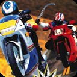

Nintendo Switch Homebrew
100% Client-Side • No Upload
Road Rash — Switch NRO Builder
Drop your original 1996 Road Rash PC CD image (.iso, .mdf, .bin/.cue, or CD folder) to build a self-contained roadrash_switch.nro right in your browser.
1. Original Road Rash PC Disc
Drag & drop your disc image or folder here
Supports
.iso, .mdf, .bin (+.cue), .img, or an extracted PC CD folder
Waiting for disc image
Select your authentic 1996 PC CD image or folder to verify game files and
ROADRASH.EXE before building.
2. Build Progress & Log
Checking engine binary...
Ready
0%